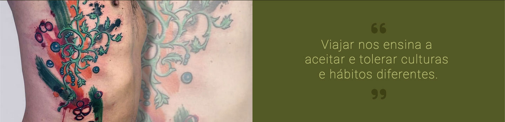
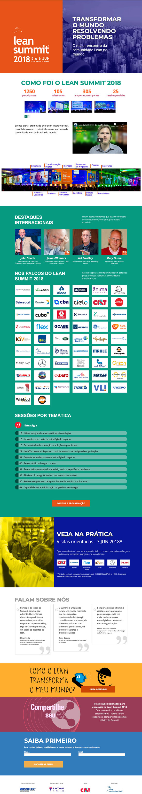
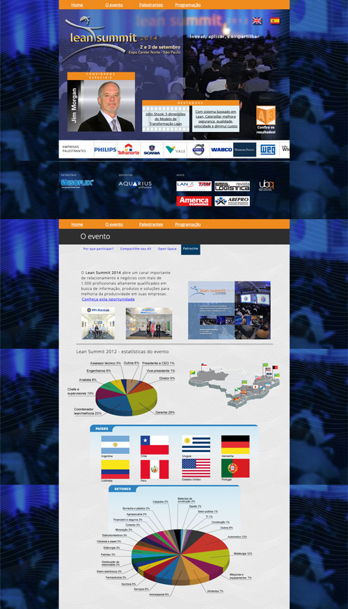
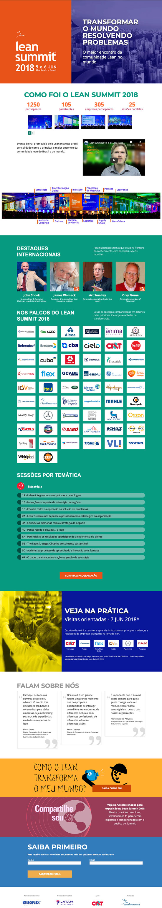
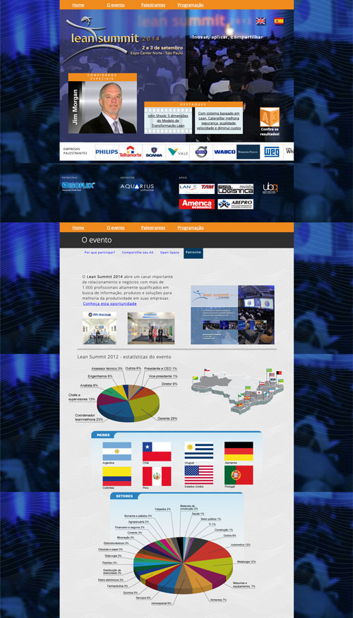
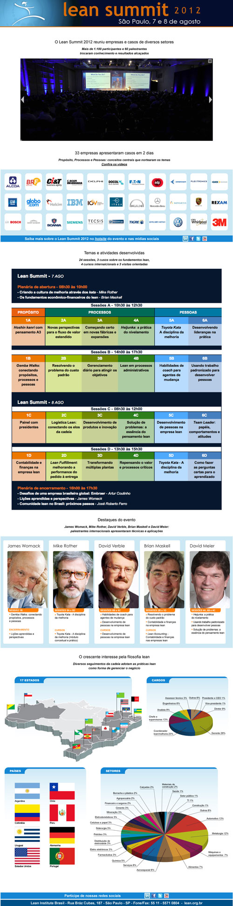
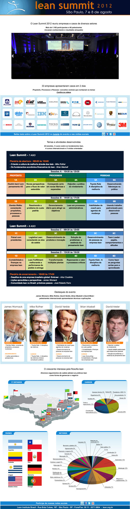

Landing page du film The Art of Eduardo Tavares - Keep Going

En 2024, le film a été récompensé comme Meilleur Documentaire au festival "The Digital Gate International Film Festival", en Algérie. En 2023, il a remporté le prix de la Meilleure Cinématographie au festival "Flowers Against Bullets", en Autriche.
En tant que réalisateur du film - "The Art of Eduardo Tavares - Keep Going" -, j'ai eu l'occasion unique de vivre et d'observer le parcours d'Eduardo Tavares dans son atelier en Australie. C'est cette expérience qui m'a permis de créer une page immersive et remplie de témoignages de grandes personnalités du monde de l'art et du tatouage "body art".
- Le film a participé aux festivals suivants :
- - Au Koweït, il a été sélectionné pour le festival "AIU Film Festival".
- "First-Time Filmmaker Sessions" par le "Lift-Off Global Network", en Angleterre.
- - Il a été projeté en Pologne au "TopShot International Film Festival".
- - En Italie, il a été sélectionné pour trois festivals : "Rudis Festival", "Fox International Film Festival" et "Festival del Cinema di Cefalù".
- - Aux États-Unis, il a été demi-finaliste et nominé pour le prix du Meilleur Documentaire au festival "SWIFF", dans le New Jersey.
- - Il a été sélectionné pour le "Saratov Sufferings Documentary Drama Film Festival", en Russie.
À chaque festival, le film a reçu une réception incroyable du public et des critiques, s'imposant comme un travail qui attire l'attention de la communauté cinématographique internationale.
En concevant la page, j'ai cherché à capturer l'essence des mots de l'artiste, ses récits de voyages et sa vision du monde de manière créative et cohérente. Le résultat est une expérience immersive et inspirante, qui vous invite à plonger dans l'univers fascinant d'Eduardo Tavares et à découvrir ce qui anime son talent singulier.


 et à la réédition de son clip vidéo, tous les éléments ont été travaillés pour créer une expérience cohérente et percutante.")


")  
  
 
